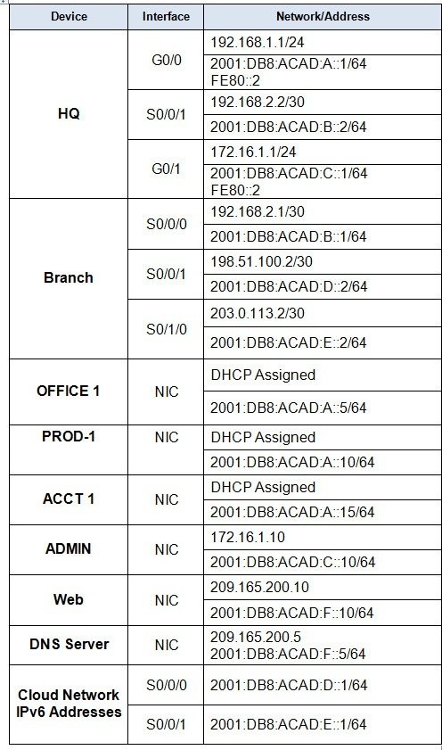

HQ or Main or Central (Router)
en
conf ter
cdp run
int g0/0
no cdp enable
int g0/1
no cdp enable
exit
ip route 0.0.0.0 0.0.0.0 192.168.2.1
ipv6 route ::/0 2001:DB8:ACAD:B::1
ipv6 unicast-routing
ip dhcp excluded-address 172.16.1.10
ip dhcp pool LANA
network 192.168.1.0 255.255.255.0
default-router 192.168.1.1
dns-server 209.165.200.5
exit
ip dhcp pool LANC
network 172.16.1.0 255.255.255.0
default-router 172.16.1.1
dns-server 209.165.200.5
Branch - Remote - Local (Router)
en
conf ter
cdp run
int s0/0/1
no cdp enable
int s0/1/0
no cdp enable
exit
ip route 0.0.0.0 0.0.0.0 198.51.100.1
ip route 0.0.0.0 0.0.0.0 203.0.113.1
ip route 0.0.0.0 0.0.0.0 203.0.113.1 5
ipv6 route ::/0 2001:DB8:ACAD:D::1
ipv6 route ::/0 2001:DB8:ACAD:E::1 5
ip route 192.168.1.0 255.255.255.0 192.168.2.2
ipv6 route 2001:DB8:ACAD:A::/64 2001:DB8:ACAD:B::2
ip route 172.16.1.10 255.255.255.255 192.168.2.2
ipv6 route 2001:DB8:ACAD:C::10/128 2001:DB8:ACAD:B::2
ipv6 unicast-routing
ip nat inside source static 172.16.1.10 198.51.100.10
int s0/0/1
ip nat outside
int s0/0/0
ip nat inside
exit
access-list 1 permit 192.168.1.0 0.0.0.255
access-list 1 permit 172.16.1.0 0.0.0.255
ip nat inside source list 1 interface s0/0/1 overload
Configure Host Addressing
OFFICE 1 or ACAD-1 or RECORDS-1
IPv4 Configuration: DHCP Assigned
IPv6 Configuration:
- IPv6 Address: 2001:DB8:ACAD:A::5/64
- IPv6 Gateway: FE80::2
- IPv6 DNS Server: 2001:DB8:ACAD:F::5
PROD-1 or TEACH-1 or TAX-1
IPv4 Configuration: DHCP Assigned
IPv6 Configuration:
- IPv6 Address: 2001:DB8:ACAD:A::10/64
- IPv6 Gateway: FE80::2
- IPv6 DNS Server: 2001:DB8:ACAD:F::5
ACCT 1 or STUDENT-1 or PERMITS-1
IPv4 Configuration: DHCP Assigned
IPv6 Configuration:
- IPv6 Address: 2001:DB8:ACAD:A::15/64
- IPv6 Gateway: FE80::2
- IPv6 DNS Server: 2001:DB8:ACAD:F::5
